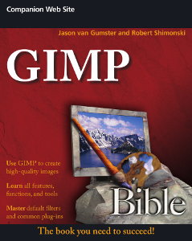

Open Source Creative Production
Jason van Gumster (@monsterjavaguns)
(This is a slide archive, you can view the original talk, given at SELF 2015, on YouTube)
HALT!
Who goes there?

Quick pause:
Anyone else in the room do creative work with Free and Open Source software?
Where are open source creative tools now?
Workhorses:


Blender
Inkscape
(image credit: Gilles Pinard)

GIMP

Krita
(image credit: David Revoy)
Audacity

VLC
(image credit: Blender Institute)
But that's just the start of it
Writing/Publishing
Scribus
Calibre
Sigil
Celtx
Trelby
Illustration
MyPaint
Video/Post
Kdenlive
OpenShot
Shotcut
Natron
Audio
Ardour
Qtractor
Rosegarden
MuseSCore
Hydrogen
3D Printing
MeshLab
ReplicatorG
And there's more
But not enough time...
Butt...
There always is one
No, these programs aren't perfect
But that's not the point.
They don't have to be
It's absolutely possible to go from
Concept → Finished, Polished Product
using only Free and Open Source software
More importantly...
It's not that weird
Let me modify that...
I'm not that weird
Questions?
Look me up
Jason van Gumster
Website: monsterjavaguns.com
Social media: monsterjavaguns
IRC: Fweeb